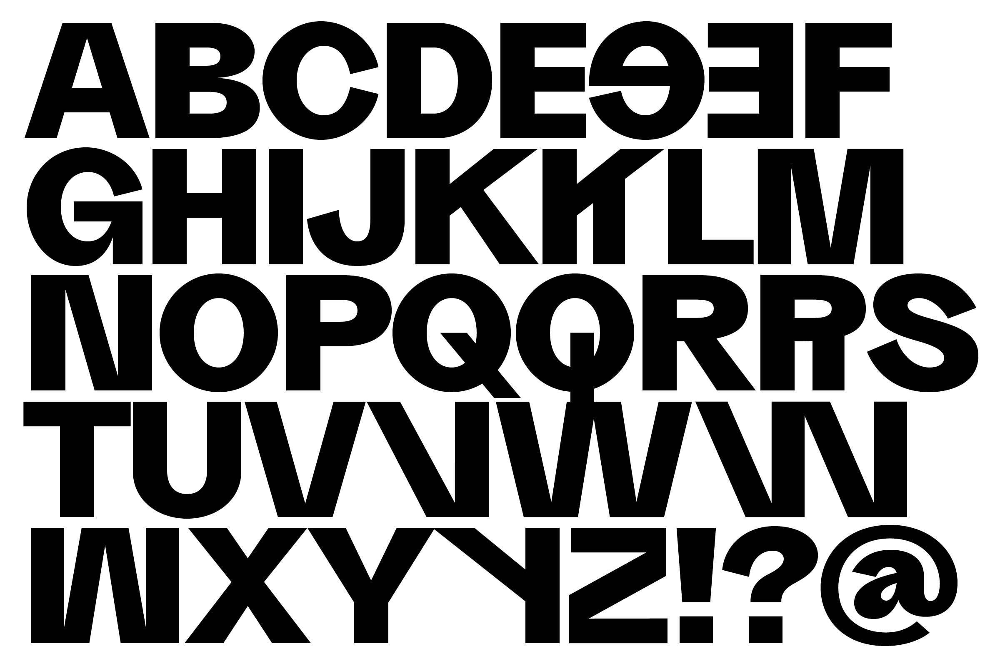
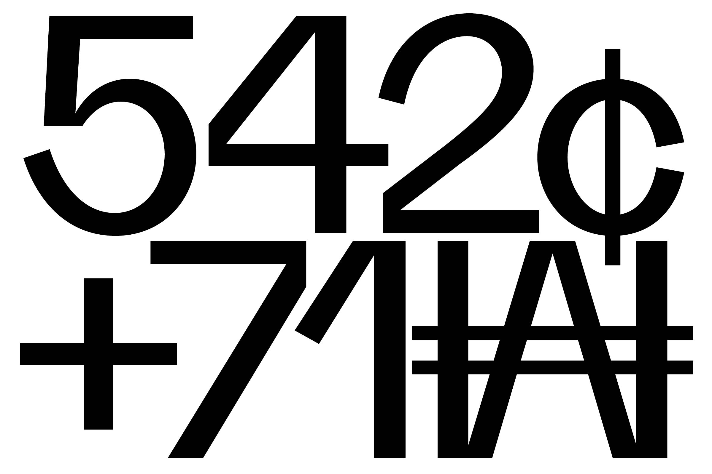
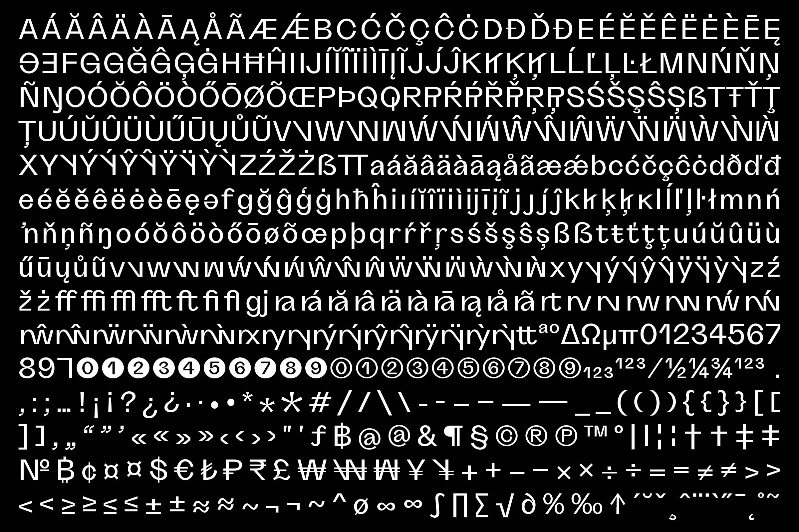

Project
Year
Client
Information
Credits
Grotta
2024
Due Studio
Design of the italics and the weights Black and Heavy as an extension of the Grotta family.
Developed together with Alessio Pompadura and Massimiliano Vitti.
Project
Grotta
Year
2024
Information
Design of the italics and the weights Black and Heavy as an extension of the Grotta family.
Credits
Developed together with Alessio Pompadura and Massimiliano Vitti.
Grotta is an irreverent contemporary neo-grotesk typeface with strong geometric accent and sharp contrast in its form. Characterized by tight apertures and an overall dynamic feeling it is suited for both display and text sizes. It is our interpretation of the 21st century grotesk, exuberant, irruptive and course that winks at the typeface from the past such as Venus-Grotesk and Monotype Grotesque. Provided with an extended language support anda wide range of OpenType features and stylistic set, Grotta is available in 7 weights from Light to Heavy with corresponding italics. The typeface has some special glyphs like the schwa and the * on x-height and uppercase to make the use of gender-inclusive language a little bit easier. It also has some fancy ligatures!